Previous slide Next slide Toggle fullscreen Open presenter view
AWS GenAI Developer Pro
MLOps完全ガイド
データ前処理・検証・学習・評価・デプロイ
試験範囲を網羅する125スライド
アジェンダ
MLOps基礎 — 概念・成熟度モデル・チーム役割
データ管理・前処理 — S3・Glue・Feature Store・Ground Truth
学習パイプライン — SageMaker Training・分散学習・HPO
CI/CDパイプライン — SageMaker Pipelines・CodePipeline統合
モデル評価 — Clarify・バイアス検出・A/Bテスト
デプロイ戦略 — エンドポイント・Blue/Green・カナリア
モデルモニタリング — ドリフト検知・アラート・再学習
セキュリティ — IAM・VPC・暗号化・コンプライアンス
コスト最適化 — Spot・Savings Plans・推論最適化
Bedrock MLOps — FM管理・エージェント・RAGパイプライン
試験対策まとめ — 頻出問題パターン・落とし穴
実践シナリオ — ケーススタディ・アーキテクチャ決定
MLOpsとは何か？
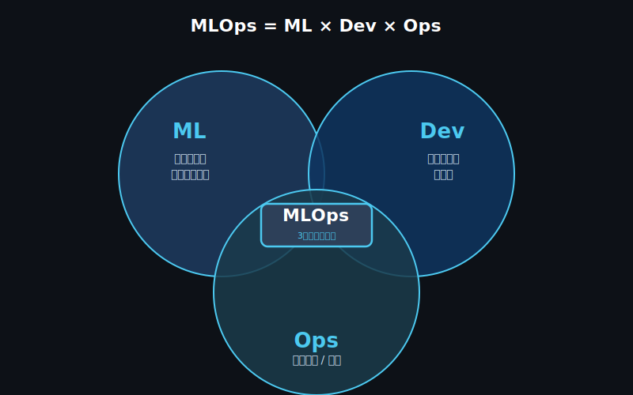
ML（機械学習）× Dev（開発）× Ops（運用）の融合
再現性・自動化・継続的改善を実現する実践手法
なぜMLOpsが必要か
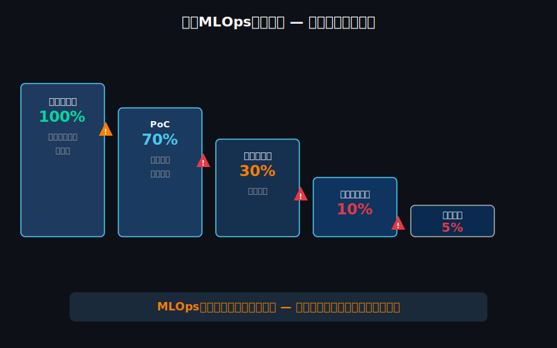
研究フェーズから本番運用への移行が最大のボトルネック
MLOpsは実験から継続運用までのギャップを体系的に解消する
MLライフサイクル全体像
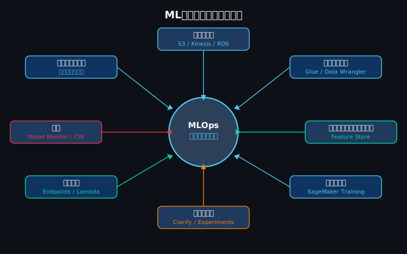
8つのフェーズが循環するエンドツーエンドのプロセス
SageMaker Pipelinesが全フェーズのオーケストレーションを担う
DevOps vs MLOps — 7つの違い
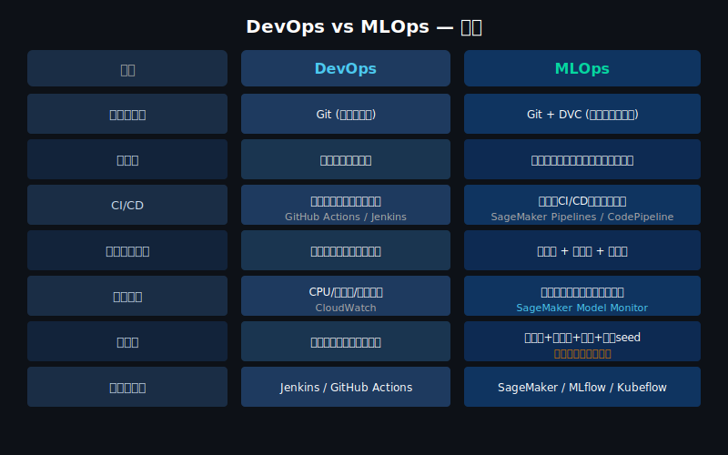
MLOpsはコードだけでなくデータ・モデル・環境も管理対象
再現性確保の難しさがMLOps最大の課題
MLOps成熟度モデル（レベル0〜3）
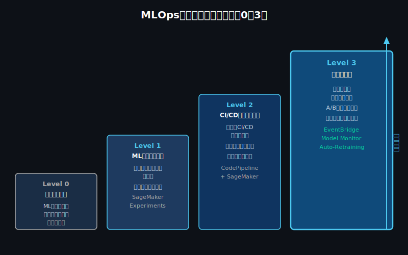
Level 0: 手動プロセス → Level 3: 完全自動化への段階的進化
試験ではLevel 2（CI/CD）以上の実装が問われることが多い
MLOpsの主な課題
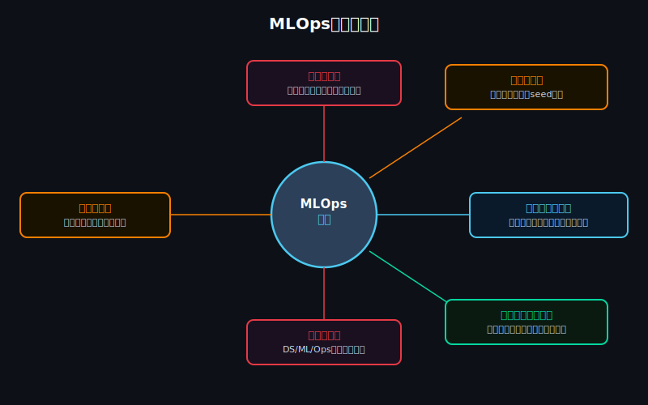
6大課題: データ品質・再現性・ドリフト・スケール・連携・コスト
各課題に対応するAWSサービスを試験で正確に選択できることが重要
AWSのMLOpsサービスマップ全体
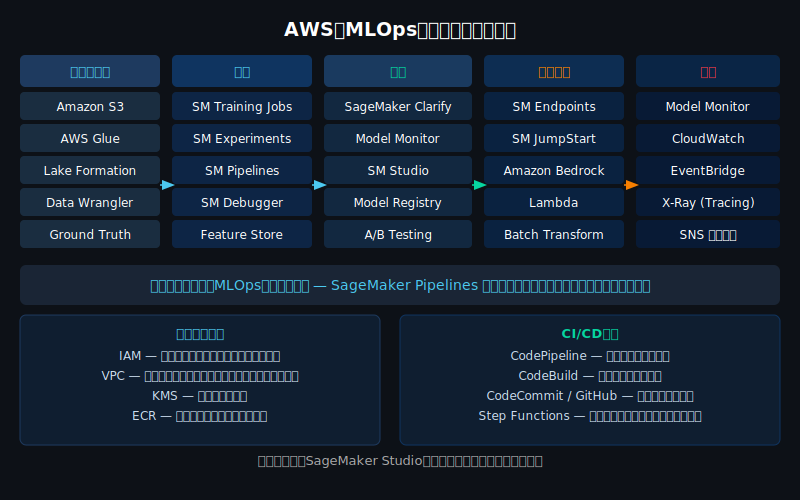
データ管理→学習→評価→デプロイ→監視の5フェーズ構成
SageMaker Studio がエンドツーエンドの統合管理ポイント
Amazon SageMaker アーキテクチャ概要
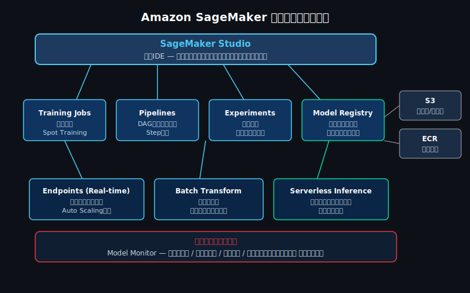
SageMaker Studio を頂点とした階層型アーキテクチャ
Training → Pipelines → Experiments → Model Registry → Inference の流れ
ML実験管理の仕組み
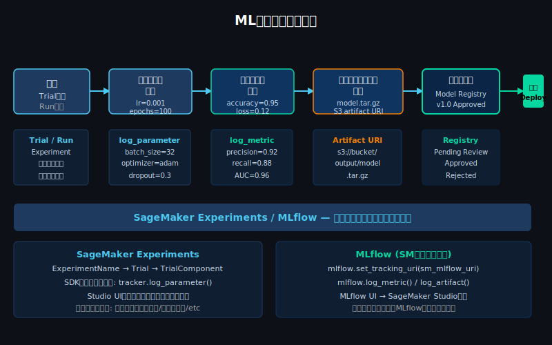
実験 → パラメータ記録 → メトリクス記録 → アーティファクト保存 → モデル登録
SageMaker ExperimentsとMLflowで全実験を自動追跡・比較可能
MLOpsチームの役割と責任
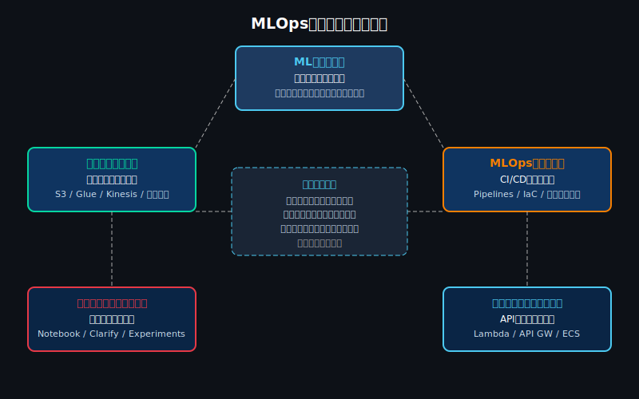
5ロール: MLエンジニア・データエンジニア・MLOpsエンジニア・DS・SE
共通責任領域: モデル品質・セキュリティ・コスト・ドキュメント
データ管理・前処理
Section 3
データ収集 / パイプライン / Feature Store / Ground Truth
データ収集戦略 — データソースマップ
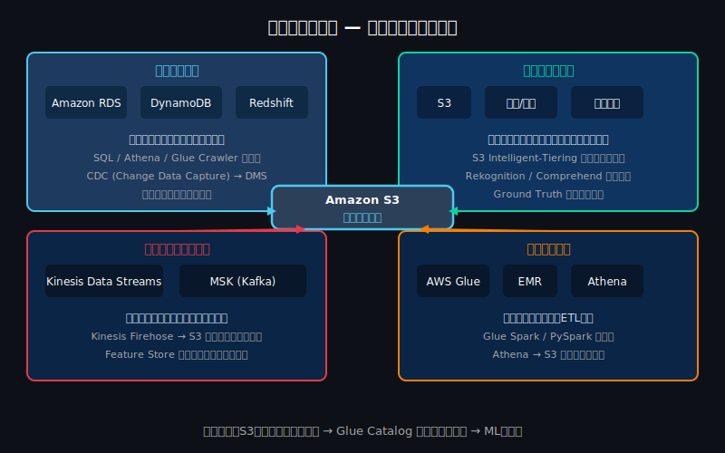
4象限: 構造化・非構造化・リアルタイム・バッチ データソース
全ソースはAmazon S3データレイクに集約 → Glue Catalogで管理
データパイプライン設計
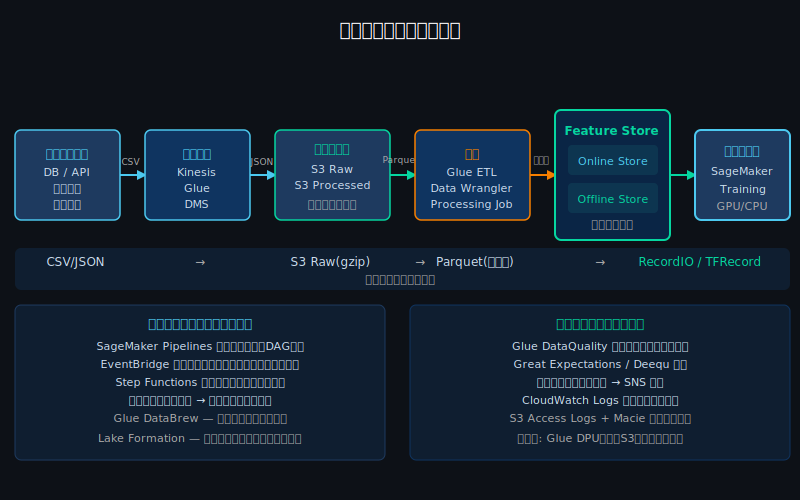
Source → Ingest → Store → Process → Feature Store → Training の6ステージ
形式変換: CSV/JSON → Parquet(列指向) → RecordIO/TFRecord(学習用)
Amazon S3 データレイク設計
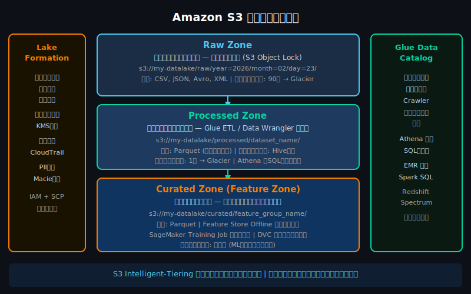
3ゾーン構成: Raw → Processed → Curated (Feature Zone)
Lake FormationでアクセJ制御、Glue Catalogでメタデータ管理
AWS Glue ETL パイプライン
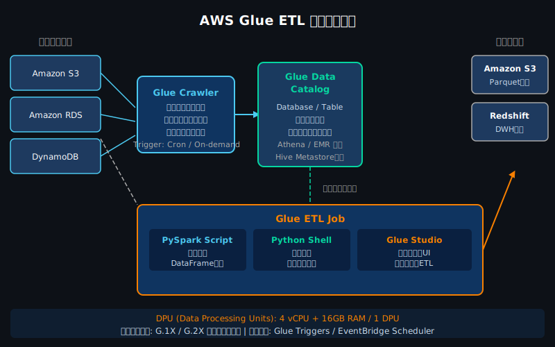
Glue Crawler → Data Catalog → ETL Job (PySpark/Python Shell/Studio) → Target
DPU: 4 vCPU + 16GB RAM / 1DPU | G.1X / G.2X ワーカータイプ選択
データ品質の4つの次元
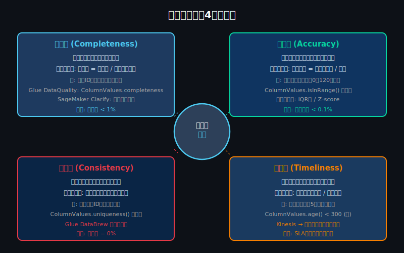
完全性・正確性・一貫性・適時性 — 4次元でデータ品質を定義
Glue DataQuality ルールで自動チェック → 品質不合格時に自動停止
特徴量エンジニアリング概要
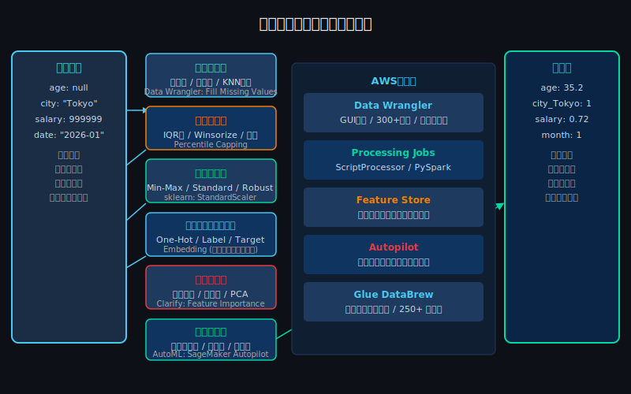
生データから学習に使える特徴量への変換プロセス
Data Wrangler(GUI) / Processing Jobs(コード) / Autopilot(自動)
SageMaker Feature Store アーキテクチャ
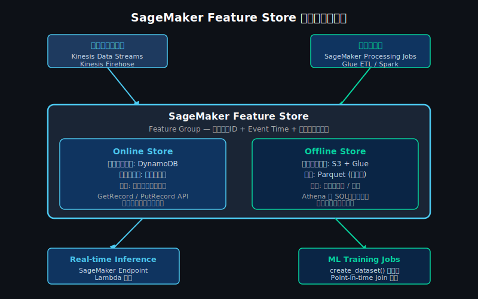
Online Store (DynamoDB: ms応答) + Offline Store (S3 Parquet: バッチ学習)
Feature Group = レコードID + Event Time + 特徴量カラム群
Feature Store: オンライン vs オフライン
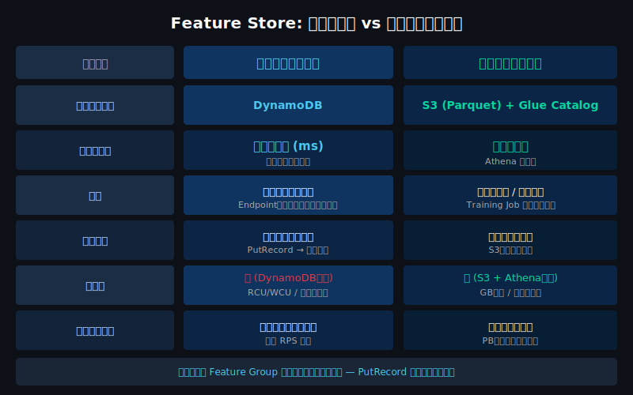
PutRecord APIで両ストアに自動同期 | Point-in-time join でトレーニングデータ作成
コスト: Online(DynamoDB高) vs Offline(S3低) — 用途で選択
SageMaker Ground Truth ラベリング
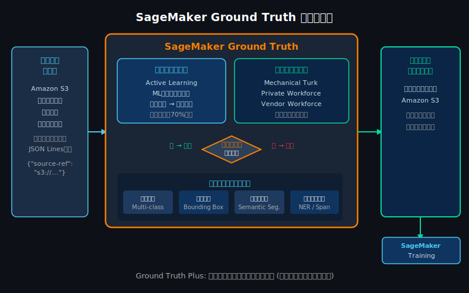
自動ラベリング(Active Learning)と人手ラベリングのハイブリッドで最大70%コスト削減
対応タイプ: 画像分類・物体検出・セマンティックセグメンテーション・テキスト分類
データバージョン管理 (DVC)
DVC (Data Version Control) — Gitと連携したデータ・モデル管理ツール
dvc init / dvc add data/ / dvc push でデータをS3等に追跡再現性: 同じコード + データ = 同じ結果を保証
AWS連携: S3をリモートストレージとして利用 (dvc remote add -d myremote s3://bucket/)
SageMaker Experiments でも実験ごとのデータ参照を記録可能
MLflow Tracking でデータセットハッシュを記録してバージョン管理
dvc init
dvc add data/train.csv
git add data/train.csv.dvc .gitignore
git commit -m 'Add training data'
dvc push
dvc remote add -d myremote s3://my-bucket/dvc
dvc remote modify myremote region ap-northeast-1
データ拡張技術一覧
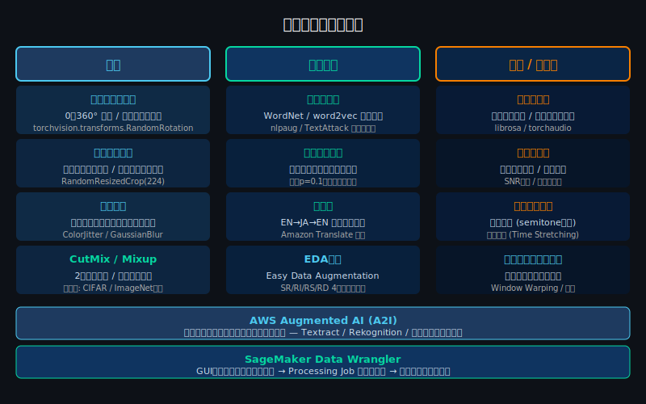
画像・テキスト・音声/時系列の3カテゴリで拡張手法を体系化
AWS A2I: 低信頼度予測に人手レビューを組み込む自動化フロー
クラス不均衡対策
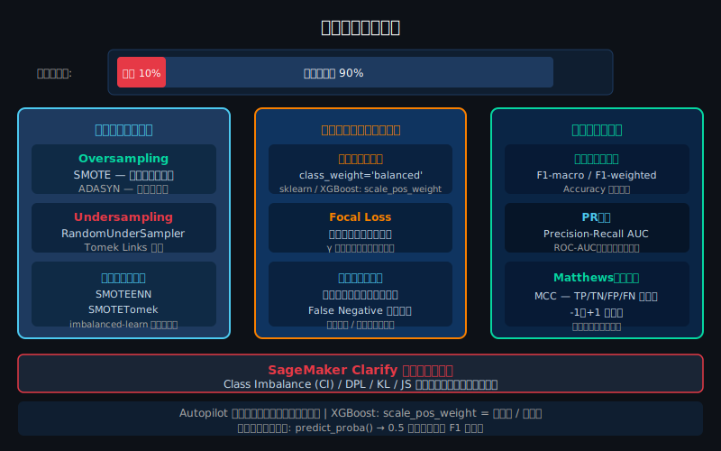
3レベルの対策: データ(SMOTE) / アルゴリズム(Focal Loss) / 評価(MCC・PR曲線)
SageMaker Clarify の Class Imbalance (CI) 指標で不均衡を自動検出
Amazon SageMaker Data Wrangler
GUIベースのデータ準備ツール — コードなしで300以上の変換ステップを適用可能
データソース: S3 / Athena / Redshift / EMR に直接接続
出力先: S3 / Feature Store / SageMaker Pipelines / Training Job へ直接エクスポート
Quick Model機能でデータ変換後の精度をXGBoostで素早くプレビュー
データ変換パターン — SageMaker Processing
PandasフレームワークとSageMaker Processingで前処理スクリプト実装
SKLearnProcessorでscikit-learnパイプラインを実行
from sagemaker.sklearn.processing import SKLearnProcessor
from sagemaker.processing import ProcessingInput, ProcessingOutput
sklearn_processor = SKLearnProcessor(
framework_version='1.2-1' ,
role=role,
instance_type='ml.m5.xlarge' ,
instance_count=1
)
sklearn_processor.run(
code='preprocessing.py' ,
inputs=[ProcessingInput(
source='s3://bucket/raw/' ,
destination='/opt/ml/processing/input'
)],
outputs=[ProcessingOutput(
source='/opt/ml/processing/output' ,
destination='s3://bucket/processed/'
)]
)
データ前処理ベストプラクティス
冪等性・バージョン管理・スケーラビリティ・リネージュ・スキーマ検証・モニタリングの6原則
データ検証
Section 4
スキーマ検証 / 統計的プロファイリング / ドリフト検出
データ検証の重要性 — Garbage In, Garbage Out
不良データ(欠損値・外れ値・スキーマ違反・分布シフト)は劣化したモデルを生む
検証済みデータ → 高精度・公平・安定したモデルへ
自動検証パイプラインで本番障害を大幅に削減
スキーマ検証の仕組み
受信データのスキーマを定義済みの制約条件(データ型・必須項目・値範囲・許容値リスト)と照合
検証通過 → 処理続行 / 失敗 → 通知・拒否・自動修正の3ルート
ツール: Great Expectations / Pandera / AWS Glue Schema Registry
統計的データプロファイリング
プロファイリングで分布・欠損値・外れ値・相関を自動把握
主要指標: 平均・標準偏差・歪度・尖度・欠損率・カーディナリティ
ツール: pandas-profiling (ydata-profiling) / SageMaker Data Wrangler
データドリフト概念
学習時と本番時のデータ分布が乖離すると、モデル精度が徐々に低下
3種類のドリフト: データドリフト(P(X)変化) / ラベルドリフト(P(Y)変化) / コンセプトドリフト(P(Y|X)変化)
KS検定・PSI(Population Stability Index)・カイ二乗検定で定量的に検知
共変量シフト vs コンセプトドリフト
共変量シフト: P(X)が変化するがP(Y|X)は不変 — 重点サンプリングや再学習で対応
コンセプトドリフト: P(Y|X)が変化(概念自体の変化) — 定期再学習やオンライン学習が必要
SageMaker Model Monitor で両方を継続的に検知・アラート
SageMaker Model Monitor — データ品質チェック
本番Endpointの入力データをキャプチャし、学習時のベースライン統計と比較
ベースライン: suggest_baseline()でstatistics.json / constraints.jsonを自動生成
スケジュール実行(hourly/daily)でProcessing Jobとして定期チェック
違反検出時: CloudWatch Alarm → SNS通知 → Lambda → 再学習パイプライン
PyDeequ (Deequ) 検証コード
Apache Deequ の Python ラッパー — AWS が開発したデータ品質ライブラリ
SparkDataFrame に対して宣言的に品質制約を定義
from pydeequ.checks import Check, CheckLevel
from pydeequ.verification import VerificationSuite
check = Check(spark, CheckLevel.Error, 'Data Quality' )
result = VerificationSuite(spark).onData(df).addCheck(
check.isComplete('customer_id' )
.isNonNegative('age' )
.isContainedIn('status' , ['active' , 'inactive' ])
.hasSize(lambda x: x >= 1000 )
.hasCompleteness('email' , lambda x: x >= 0.95 )
).run()
print (result.status)
Great Expectations 統合
Great Expectations — データ品質の「単体テスト」フレームワーク
Expectation Suite: 期待値ルールのコレクション (例: expect_column_values_to_not_be_null)
Data Docs: 自動生成されるHTMLデータ品質レポート
Checkpoint: バッチ処理のバリデーション実行単位
AWS統合: S3をExpectationsストアとして使用、Glueジョブへの組み込み
SageMaker Pipelines の ClarifyCheckStep との組み合わせも可能
データ検証パイプライン設計
取り込み → スキーマ検証 → プロファイリング → 品質ルール → ドリフト検出 → 品質ゲートの完全自動化
品質NG時は隔離バケットへ自動移動 + アラート通知
SageMaker Pipelines でエンドツーエンドのオーケストレーション
検証ルール設計パターン — QualityCheckStep
SageMaker Pipelines の QualityCheckStep でデータ品質チェックを自動化
from sagemaker.workflow.quality_check_step import (
QualityCheckStep, DataQualityCheckConfig
)
data_quality_config = DataQualityCheckConfig(
baseline_dataset='s3://bucket/baseline/data.csv' ,
dataset_format=DatasetFormat.csv(header=True ),
output_s3_uri='s3://bucket/quality-reports/'
)
data_quality_check_step = QualityCheckStep(
name='DataQualityCheck' ,
quality_check_config=data_quality_config,
check_job_config=check_job_config,
skip_check=False ,
register_new_baseline=False
)
異常検出パターン
3つのアプローチ: 統計的手法(Z-スコア/IQR) / 機械学習(Isolation Forest/Autoencoder) / AWSサービス
Amazon Lookout for Metrics: マネージドの時系列異常検出サービス
SageMaker Random Cut Forest: リアルタイムストリームデータの異常検知
モデル学習
Section 5
Training Jobs / 分散学習 / HPO / Experiments / Fine-tuning
学習パイプライン全体像
Feature Store/S3 → Processing → Training Job → Experiments → Model Registry → 品質ゲートの完全自動化
品質ゲート通過でデプロイパイプラインへ自動移行 / 失敗で再学習ループ
SageMaker Pipelines がオーケストレーションの中心
SageMaker Training Jobs
コンテナ環境でトレーニングスクリプトを実行するマネージドサービス
入力: アルゴリズムコンテナ(ECR) / 学習データ(S3) / ハイパーパラメータ / IAMロール
出力: モデルアーティファクト(S3) / CloudWatch Logs / メトリクス
データ入力モード: File Mode / Pipe Mode / FastFile Mode
SageMaker 組み込みアルゴリズム一覧
教師あり: XGBoost / Linear Learner / KNN / Factorization Machines
教師なし: K-Means / PCA / IP Insights / Object2Vec
CV: Image Classification / Object Detection / Semantic Segmentation
NLP: BlazingText / Seq2Seq / LDA | 時系列: DeepAR / Random Cut Forest
カスタムコンテナ学習
任意のフレームワーク(Python/R/Java)をDockerコンテナ化してECRへプッシュ
SageMaker規約: /opt/ml/input/data/ (入力) / /opt/ml/model/ (出力) / /opt/ml/output/ (ログ)
環境変数: SM_CHANNEL_TRAINING (学習データパス) / SM_MODEL_DIR (モデル保存先)
SageMaker Training Toolkit でエントリーポイント自動解決
分散学習アーキテクチャ
Parameter Server: PS が勾配を集約・ボトルネックになりやすい / スパースモデル向け
AllReduce (Ring-AllReduce): 各ワーカーが均等に通信・線形スケール / 密なモデル向け
AWS推奨: NCCL + Horovod または SageMaker Distributed Training Library
データ並列 vs モデル並列
データ並列: 全GPUに同じモデルコピー / 異なるデータバッチを並列処理 / 大規模データセット向け
モデル並列: モデルを分割して各GPUが担当 / Pipeline Parallelism / LLM Fine-tuning向け
SageMaker Distributed Training Library (SMDP + SMMP) で両方をサポート
SageMaker Distributed Training Library
SMDP (Data Parallel): AllReduce最適化 / EFAネットワーク活用 / PyTorch・TF対応
SMMP (Model Parallel): 自動モデル分割 / Pipeline Parallelism / Activation Checkpointing
設定は Estimator の distribution 引数に JSON で渡すだけ
ハイパーパラメータチューニング (HPO)
探索戦略: ベイズ最適化(推奨) / ランダム探索 / グリッドサーチ
ベイズ最適化: 過去の結果を元にGaussian Processで次の有望な候補を予測
SageMaker AMT: MaxParallelJobs / MaxNumberOfJobs / Early Stopping で予算制御
Warm Start: 前回のチューニング結果を初期値として次回に活用
SageMaker Automatic Model Tuning (AMT) ワークフロー
AMTワークフロー: パラメータ選択 → 学習ジョブ → メトリクス評価 → 次候補提案のループ
Early Stopping: Bandit/MedianStopping戦略で改善見込みのないジョブを早期終了
最良ジョブは自動的にModel Registryへ登録 / Experimentsで全トライアル比較可能
Spot Training + HPOの組み合わせで最大70%コスト削減
ベイズ最適化 vs グリッドサーチ vs ランダム探索
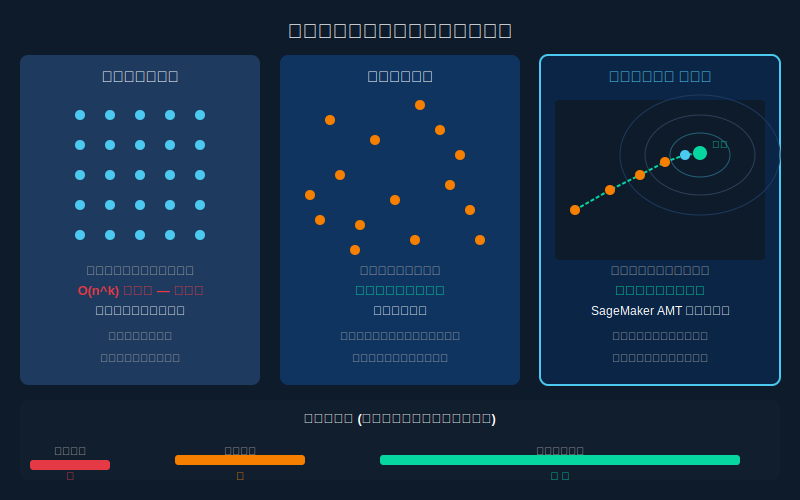
SageMaker Experiments 実験管理
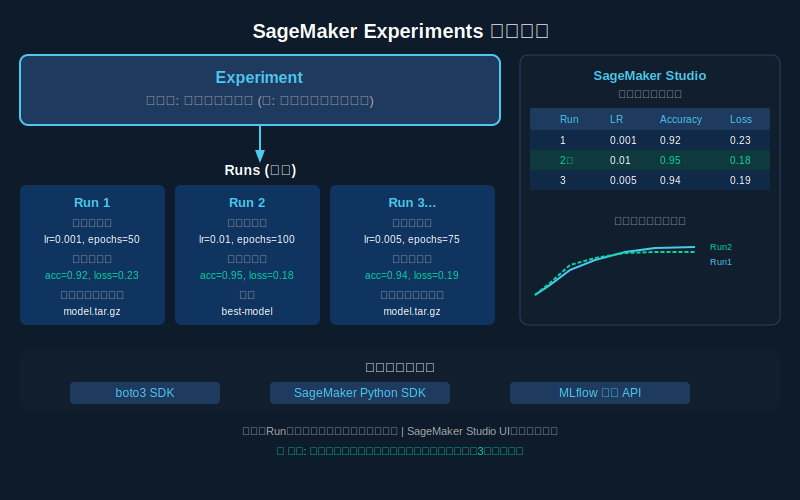
MLflow 統合パターン
SageMaker Managed MLflow でトラッキングサーバーを完全マネージド化
既存MLflowコードをほぼ変更なしで移行可能
import mlflow
import sagemaker
mlflow.set_tracking_uri(sagemaker.get_mlflow_tracking_arn())
mlflow.set_experiment('mlops-experiment' )
with mlflow.start_run():
mlflow.log_param('learning_rate' , 0.001 )
mlflow.log_param('epochs' , 100 )
for epoch in range (100 ):
loss = train_epoch()
mlflow.log_metric('train_loss' , loss, step=epoch)
mlflow.sklearn.log_model(model, 'model' )
転移学習・ファインチューニング概念
Foundation Model ファインチューニング戦略
Amazon Bedrock ファインチューニングワークフロー
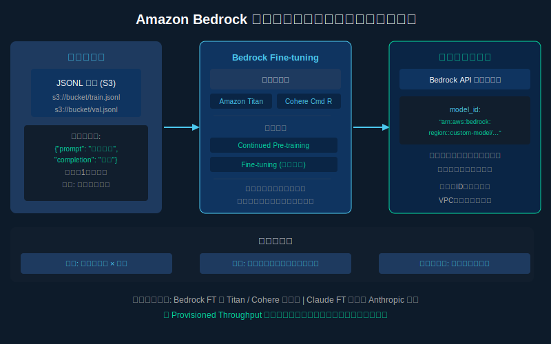
Managed Spot Training コスト最適化
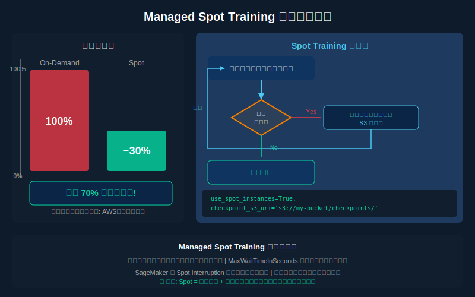
モデル評価
Section 6
評価指標 / SageMaker Clarify / バイアス / 説明可能性
分類評価指標 — 混同行列・F1・AUC
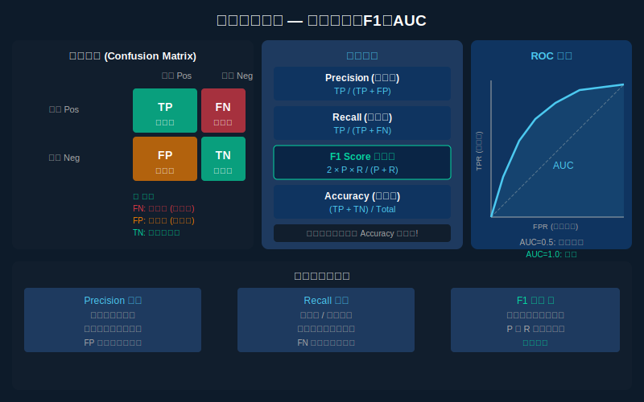
回帰評価指標 — RMSE・MAE・R²
MAE (平均絶対誤差): Σ|y_i - ŷ_i|/n — 外れ値の影響を受けにくい
MSE (平均二乗誤差): Σ(y_i - ŷ_i)²/n — 外れ値を強調
RMSE (二乗平均平方根誤差): √MSE — 元の単位と同じスケール ★よく使用
R² (決定係数): 1 - SS_res/SS_tot — モデルの説明力 (1.0が完璧)
MAPE (平均絶対パーセント誤差): Σ|y_i-ŷ_i|/y_i×100% — スケール非依存
試験ポイント: タスクに応じた指標選択が重要 (例: 金融予測→RMSE / 需要予測→MAPE)
生成AI評価指標 — BLEU / ROUGE / BERTScore
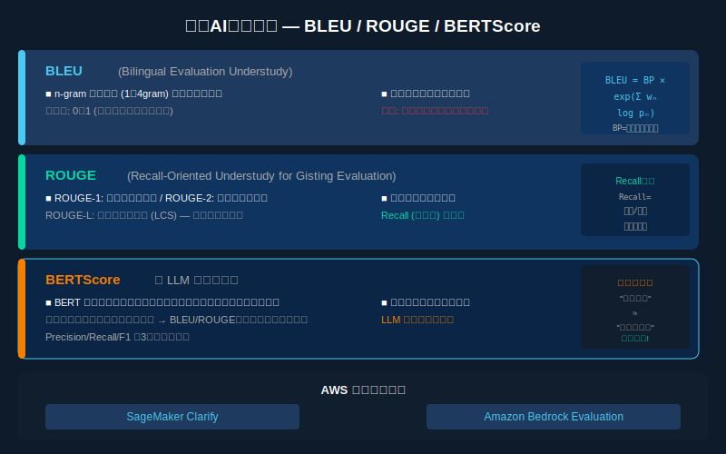
LLM評価: RAGAS フレームワーク
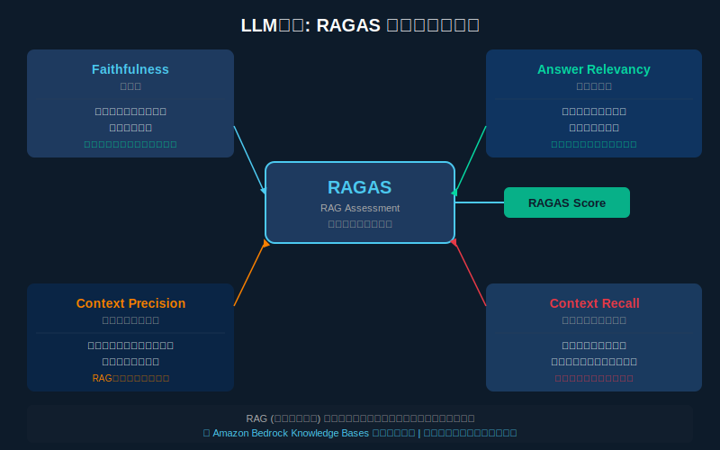
A/Bテスト設計
SageMaker Clarify: バイアス検出
モデルカードの構成
モデルカード: モデルの透明性・説明責任のための標準ドキュメント
基本情報: モデル名, バージョン, 作成者, 作成日, ライセンス
用途: 想定ユースケース, 範囲外ユースケース, ユーザー層
学習データ: データセット概要, 前処理手順, データガバナンス
評価結果: 全体性能 + 属性別 (サブグループ) 性能
制限事項・バイアス: 既知の限界, バイアスリスク, 推奨される使用上の注意
AWS: SageMaker Model Cards で標準化・PDF出力対応
モデルデプロイ
Section 7
デプロイ戦略 / SageMaker Endpoints / Bedrock / エッジ
カナリアデプロイ
シャドウデプロイ
本番影響ゼロで新モデルを長期評価するデプロイ戦略
shadowProductionVariants 設定でリクエストをミラーリング
本番レスポンスはモデルAのみ — モデルBはログ記録専用
S3ログから比較ジョブで品質・ドリフトレポートを自動生成
SageMaker Endpoints アーキテクチャ
Client → DNS名エンドポイント → Endpoint Config → Production Variants
Variant ごとに重み設定でトラフィック配分 (weight: 0.9 / 0.1 など)
各 Variant が ML Instance グループ (ECRコンテナ + S3アーティファクト) を持つ
Auto Scaling: CloudWatch InvocationsPerInstance → Target Tracking
リアルタイム推論設定（コード例）
SageMaker Real-time Endpoint のデプロイと推論呼び出し
Production Variantsでカナリアデプロイを設定
import sagemaker
from sagemaker.model import Model
model = Model(
image_uri=container_image,
model_data='s3://bucket/model.tar.gz' ,
role=role
)
predictor = model.deploy(
initial_instance_count=2 ,
instance_type='ml.g4dn.xlarge' ,
endpoint_name='mlops-demo-endpoint'
)
response = predictor.predict({
'instances' : [[1.2 , 3.4 , 5.6 ]]
})
大量のS3データに対してオフライン推論を実行するジョブ型サービス
MaxConcurrentTransforms で並列化、MaxPayloadInMB でバッチサイズ制御
Split/Join設定でCSV・JSON・Parquet形式に対応
推論完了後インスタンスが自動削除 — オンデマンド課金のみ
サーバーレス推論
コールドスタートあり (数秒〜30秒) だが、アイドル時コスト $0
メモリ設定: 1024MB 〜 6144MB、同時実行: 自動 (0 → 1000+)
最大ペイロード 4MB、最大タイムアウト 60秒
低頻度・散発的トラフィックに最適。高頻度はReal-timeを推奨
非同期推論 (Async Inference)
クライアントは 202 Accepted を即時受け取り — 非同期処理
最大ペイロード 1GB、最大処理時間 60分に対応
処理完了・エラーを SNS で通知、結果は S3 に保存
アイドル時インスタンス数ゼロ設定でコスト最適化可能
Multi-Model Endpoints
複数モデルを単一エンドポイントでホスト — コスト約 1/N に削減
モデルキャッシュ (LRU) でメモリ内ロード/アンロードを自動管理
推論時に TargetModel パラメータでモデルを指定
マルチテナントML・A/Bテスト用大量モデル管理に最適
SageMaker JumpStart
100+ オープンソース基盤モデルに1クリックアクセス
Llama 2/3, Mistral, Falcon, Stable Diffusion などを即デプロイ
ドメイン特化ファインチューニング済みモデルも提供
エンドツーエンドMLソリューション (Notebook + Pipeline 一式)
Amazon Bedrock デプロイ/アクセスオプション
オンデマンド: APIコールごとに課金、即時利用、コミット不要
プロビジョンドスループット: 専用キャパシティ、安定スループット、1ヶ月コミット
バッチ推論: 大量リクエスト一括処理、50%以上コスト削減
Bedrock Agents + Knowledge Bases との統合で RAG・エージェント構築
コンテナ化 ベストプラクティス
マルチステージビルドでイメージサイズ最小化 (builder → runtime分離)
タグでなくダイジェスト (sha256) でイメージを参照し不変性を保証
非rootユーザー実行でコンテナ侵害時の権限昇格リスク低減
HEALTHCHECK命令実装 / Secrets Manager でシークレット管理
SageMaker Neo + エッジデプロイ
SageMaker Neo: 学習済みモデルを特定ハードウェア向けに自動コンパイル
量子化・プルーニング・演算子融合で最大2〜4倍の高速化
IoT Greengrass: クラウド接続なしでエッジ推論、コンポーネントでモデル配信
SageMaker Edge Manager: エッジフリート管理とモニタリング
デプロイ自動化パイプライン
Model Registry 登録 → EventBridge → パイプライン自動開始
統合テスト → シャドウデプロイ → メトリクス確認 → カナリアデプロイ
各ステップで品質ゲート失敗時に自動ロールバック
全プロセスをコードとして管理 (GitOps) — 再現性・監査証跡を保証
インフラ as Code (CDK) コード例
AWS CDK でSageMaker Endpointをコード定義
インフラの変更もGitで管理可能
from aws_cdk import aws_sagemaker as sagemaker
from aws_cdk import Stack
class MLEndpointStack (Stack ):
def __init__ (self, scope, id , **kwargs ):
super ().__init__(scope, id , **kwargs)
model = sagemaker.CfnModel(
self , 'MLModel' ,
execution_role_arn=role_arn,
primary_container=sagemaker.CfnModel.ContainerDefinitionProperty(
image=container_image,
model_data_url='s3://bucket/model.tar.gz'
)
)
endpoint_config = sagemaker.CfnEndpointConfig(
self , 'EndpointConfig' ,
production_variants=[{
'modelName' : model.attr_model_name,
'instanceType' : 'ml.g4dn.xlarge' ,
'initialInstanceCount' : 2 ,
'variantName' : 'AllTraffic'
}]
)
監視・品質管理
Section 8
Model Monitor / ドリフト検知 / CloudWatch / 自動再学習
モデルモニタリング概要
4つの監視次元: データ品質 / モデル品質 / バイアスドリフト / 説明可能性
SageMaker Model Monitor がスケジュール実行で自動チェック
CloudWatch Alarm → SNS → Lambda → 再学習トリガーの自動化チェーン
SageMaker Model Monitor 4種類
Data Quality Monitor: 入力特徴量の統計的制約チェック (suggest_baseline()で自動生成)
Model Quality Monitor: 予測値 vs Ground Truth、F1/RMSE/AUC監視
Bias Drift Monitor: DPPL/DIなど公平性指標の変化を Clarify ベースで検知
Explainability Monitor: SHAP値の時系列変化とドリフトを追跡
データ品質モニタリング設定
Model Monitor でデータ品質ベースラインを生成し定期チェックを設定
from sagemaker.model_monitor import DefaultModelMonitor
from sagemaker.model_monitor.dataset_format import DatasetFormat
monitor = DefaultModelMonitor(role=role, instance_type='ml.m5.xlarge' )
monitor.suggest_baseline(
baseline_dataset='s3://bucket/baseline/data.csv' ,
dataset_format=DatasetFormat.csv(header=True ),
output_s3_uri='s3://bucket/baseline-results/'
)
monitor.create_monitoring_schedule(
monitor_schedule_name='data-quality-schedule' ,
endpoint_input=predictor.endpoint_name,
output_s3_uri='s3://bucket/monitoring-reports/' ,
schedule_cron_expression='cron(0 * ? * * *)'
)
モデル品質モニタリング
推論時に InferenceID で予測値と Ground Truth を紐付け
GT ラベルは数時間〜数日後に S3 に取り込み、精度指標を自動計算
精度劣化を CloudWatch メトリクスとして発行し、Alarm でアラート
バイアスドリフト検知
保護属性 (性別・年齢・人種など) 別の予測率変化を定期監視
DPPL = |グループAの正予測率 - グループBの正予測率|
閾値超過で CW Alarm → SNS → 再評価トリガーを自動発動
SageMaker Clarify: BiasConfig + ModelConfig で監視設定
説明可能性モニタリング
SHAP値の時系列変化でモデル挙動の変化を定量的に追跡
特徴量重要度の急変はデータパイプライン問題のシグナル
基準時 (T0) との比較で各特徴量のドリフト量を可視化
SageMaker Clarify ベースで定期的に SHAP 計算をスケジュール
Amazon CloudWatch + SageMaker 統合
Training Jobs / Endpoints / Model Monitor / Pipelines → CW Metrics & Logs
主要メトリクス: InvocationsPerInstance, ModelLatency, OverheadLatency
CW Alarms で SNS / Lambda / SSM / EventBridge へアクション連携
アラート・自動再学習トリガー設計
トリガー: CW Alarm (精度低下) / EventBridge Schedule / S3 Event / 手動
EventBridge がルーティング → Lambda / Step Functions がオーケストレーション
SageMaker Pipelines で再学習: データ更新 → 学習 → 評価 → 登録 → デプロイ
Human Approval (SNS) オプションで重要モデルに手動ゲートを設置
モニタリングダッシュボード設計
エンドポイント稼働率 / 推論レイテンシ (P50/P95/P99) / データ品質スコア
モデル精度推移 / コスト推移 / アクティブアラート一覧
ツール選択: CloudWatch Dashboard (ネイティブ) / Amazon Managed Grafana / QuickSight
MLOpsパイプライン
Section 9
SageMaker Pipelines / Step Functions / MWAA / CI/CD / GitOps
MLOpsパイプライン全体像
コード/データ変更 → CI/CD → ユニットテスト → MLパイプライン (前処理→学習→評価→品質ゲート)
モデルレジストリ登録 → デプロイ承認 → カナリアデプロイ → 継続モニタリング
モニタリングからのフィードバックループで継続的改善サイクルを実現
GitOps: 全変更をGit管理 — 再現性・監査性・ロールバックを保証
SageMaker Pipelines アーキテクチャ
SageMaker Pipelines — ステップタイプ
AWS Step Functions for ML ワークフロー
Amazon MWAA — Apache Airflow ML パイプライン
CI/CD for ML — CodePipeline + CodeBuild
GitOps for ML — Git を唯一の真実の源泉に
MLOps IaC パターン — AWS CDK + SageMaker Pipelines
SageMaker PipelinesのパイプラインをPythonコードで定義・バージョン管理
pipeline.upsert() で既存パイプラインを更新可能（冪等性）
ParameterString でパイプライン実行時に動的パラメータを渡す
CDK/CloudFormationと組み合わせてインフラ全体をIaC化
from sagemaker.workflow.pipeline import Pipeline
from sagemaker.workflow.steps import TrainingStep, ProcessingStep
from sagemaker.workflow.parameters import ParameterString
model_approval = ParameterString(
name='ModelApprovalStatus' ,
default_value='PendingManualApproval'
)
pipeline = Pipeline(
name='mlops-training-pipeline' ,
parameters=[model_approval],
steps=[preprocess_step, train_step, eval_step,
condition_step],
sagemaker_session=session
)
pipeline.upsert(role_arn=role)
セキュリティ・ガバナンス
Section 10
VPC / IAM / 暗号化 / モデルガバナンス / コンプライアンス
SageMaker Role Manager
SageMaker Role Manager — ML用IAMロールを簡単に作成・管理
ペルソナベース: Data Scientist / MLOps Engineer / SageMaker Studio User の3タイプ
アクティビティベース: 必要なML活動を選択すると最小権限ポリシーを自動生成
SageMaker Studio統合: Studio起動時に自動的に適切なロールを割り当て
VPCオプション: ネットワーク制約付きロールも簡単設定
試験ポイント: 最小権限の原則を自動適用、手動ポリシー作成エラーを防止
暗号化・データ保護設定
コスト最適化
Section 11
Spot Training / 推論最適化 / コスト配分 / RI
Managed Spot Training — チェックポイント詳細
試験対策まとめ
Section 12
チートシート / 頻出パターン / 意思決定フロー
よくある試験問題パターン
大規模モデルをコスト効率よく学習 → Managed Spot Training + チェックポイント
リアルタイムとバッチ両方で特徴量を使いたい → SageMaker Feature Store (オンライン+オフライン)
本番影響ゼロで新モデルをテスト → Shadow Deployment (Shadow Variant)
入力データの分布変化を検知 → SageMaker Model Monitor (Data Quality Monitor)
モデル予測のバイアスを検出・説明 → SageMaker Clarify
LLMをカスタムデータでFine-tune → Amazon Bedrock Fine-tuning / JumpStart
複数モデルを1エンドポイントでホスト → Multi-Model Endpoint
お疲れさまでした！
125スライドでMLOpsを完全網羅
AWS Certified Generative AI Developer - Professional
試験合格を目指して頑張ってください
SageMaker / Bedrock / MLOps パイプラインをマスターしよう
AWS Certified Generative AI Developer - Professional 試験のMLOpsセクション完全対策
MLOpsはDevOpsの原則をML開発に適用したもの。3領域が交差する部分が本質。
Hidden Technical Debt in ML Systems (NIPS 2015) — Google論文。本番化できるのは全プロジェクトの5%に過ぎない。
MLライフサイクルは線形ではなく循環的。フィードバックループにより継続的に改善。
試験頻出: DevOpsとの違いを問う問題。コード+データ+環境=完全な再現性
Google MLOps成熟度モデル参考。AWS試験ではLevel 2-3が中心的な試験範囲。
課題と解決策のマッピングが試験の核心。モデルドリフト→Model Monitor、コスト→Spot Instancesなど。
試験頻出のサービスマップ。フェーズ毎の対応サービスを正確に把握することが必須。
SageMakerはMonolithic MLプラットフォーム。各コンポーネントの役割と連携を整理しておく。
実験管理なしでは再現性・改善が不可能。SageMaker ExperimentsはSDK一行で自動記録。
組織構造の理解は試験でシナリオ問題として出題される。責任分担の明確化がMLOps成功の鍵。
試験ではデータソースとAWSサービスのマッピングを問う問題が頻出。Kinesisはリアルタイム、Glueはバッチ処理。
Parquet形式は列指向で圧縮率が高く、Athenaクエリコストも最適化。SageMaker Pipelines でDAG定義。
試験頻出: Lake Formationは細粒度のアクセス制御（行・列レベル）を提供。S3のみでは不可能な管理。
試験でGlueを問う問題: Crawlerはスキーマ自動検出、ETL JobはApache Sparkベース、Studioはビジュアル操作。
試験では品質チェックツールの選択が問われる。Glue DataQuality(ETL統合)、Deequ(Spark)、Great Expectations(汎用)。
特徴量エンジニアリングはモデル精度向上の最重要ステップ。Data Wranglerは300以上の変換を提供。
試験頻出: Online/Offline Storeの使い分け。リアルタイム推論=Online、バッチ学習=Offline。
試験問題例: 低レイテンシ推論用特徴量→Online Store、バッチ学習用→Offline Store。両方同時有効化可能。
試験では: Mechanical Turk(公開)/ Private Workforce(社内)/ Vendor(専門業者) の使い分けを問われる。
DVCはGitと同じ操作感でデータ管理。.dvcファイルをGitで管理し実データはS3に保存。試験でのデータ再現性の実装手法として重要。
試験では各拡張手法の用途と制約を問う問題が出る。CutMixとMixupは最先端の画像拡張。逆翻訳はNLPで有効。
試験では不均衡データの評価指標選択が頻出。Accuracy→不適切、F1-macro/MCC→適切。XGBoost: scale_pos_weight=負例数/正例数。
Data Wranglerは.flowファイルで変換フローを保存・共有できる。SageMaker Studioと統合されており、視覚的なパイプライン構築が可能。試験では「ノーコードでデータ前処理」の文脈で出題される。
SageMaker Processingはコンテナベースで任意の前処理を実行できる。SKLearnProcessor以外にもPySparkProcessor、FrameworkProcessorがある。/opt/ml/processing/input と /opt/ml/processing/output が規約パス。
本番MLパイプラインで最も重要な原則。冪等性はデバッグ・再現性に不可欠。DVC(Data Version Control)はデータのGit管理ツールとして広く使われる。
Section 4: データ検証。MLOpsにおけるデータ品質保証の核心。試験では各検証手法の特徴と適切なAWSサービスの組み合わせが問われる。
Garbage In, Garbage Outの原則はML実務の鉄則。自動検証で本番障害を85%削減という数字は業界調査(Gartner等)のベンチマーク。試験では「品質ゲート」の設計パターンが頻出。
Glue Schema Registryはスキーマの中央管理とバージョニングを提供。Kafkaストリームやシリアル化(Avro/JSON)との統合が強み。Panderaはpandasデータフレームに型アノテーション的に制約を記述できる。
ydata-profilingはpandas-profilingの後継。大規模データではSpark版のpandas-profiling on EMRやData Wranglerが推奨。歪度(skewness)はlog変換の必要性判断、尖度(kurtosis)は外れ値の重大性判断に使う。
PSI(Population Stability Index): 0.1未満は安定、0.1〜0.25は軽微な変化、0.25以上は大きな変化として再学習を検討。SageMaker Model MonitorはデフォルトでKS検定を使用。
試験頻出。共変量シフトは顧客層の変化(P(X)変化)、コンセプトドリフトは市場環境の変化(P(Y|X)変化)として出題される。対策手法(重点サンプリング vs オンライン学習)も覚える。
Model Monitorは4種類: Data Quality Monitor / Model Quality Monitor / Bias Drift Monitor / Feature Attribution Drift Monitor。試験では用途の使い分けが問われる。DataCaptureConfigの設定が前提条件。
SageMaker Processing Job内でPyDeequを実行し、品質チェックを自動化することが推奨パターン。Deequは元々Amazon内部でAmazonの大規模データセットに使用していたScalaライブラリ。
Great ExpectationsはMLOpsのデータ品質管理ツールとして事実上の標準。Expectation Suiteをバージョン管理することでデータ品質のCI/CDが実現できる。
品質ゲートのthresholdをビジネス要件から逆算して設定することが重要。隔離されたデータは人手レビュー後に再処理するワークフローも設計する。
skip_check=Trueにするとベースライン生成のみでチェックをスキップ。register_new_baseline=Trueにすると現在のデータを新しいベースラインとして登録。初回実行時はregister_new_baseline=Trueで実行する。
試験では各手法の適用場面が問われる。単変量→Z-スコア/IQR、多変量→Isolation Forest、時系列マネージド→Lookout for Metrics、リアルタイムストリーム→RCFというマッピングを覚える。
Section 5: モデル学習。SageMakerの学習インフラとスケーラブルな学習手法。試験では分散学習の選択基準とHPOの設定が頻出。
このパイプラインがMLOpsの理想形。各ステップがPipeline Step(ProcessingStep, TrainingStep, QualityCheckStep, ModelStep, ConditionStep)として定義され、DAGで管理される。
FastFileModeはFile ModeとPipe Modeの中間。S3ファイルをローカルへコピーせずランダムアクセス可能。大規模データセットで特に効果的。Spot Trainingで最大90%コスト削減が可能だがチェックポイントが必須。
試験頻出。XGBoostとLinear Learnerは最もよく出る。DeepARは「確率的予測で複数系列を同時学習」が特徴。BlazingTextはWord2Vec+テキスト分類を高速実行。IP InsightsはIPアドレスの異常アクセス検知。
SAGEMAKER_PROGRAM環境変数でエントリーポイントスクリプトを指定。training_env()でハイパーパラメータを読み込む。FROM sagemaker-tensorflow:2.12のようにAWSが提供するベースイメージを使うと規約に準拠しやすい。
試験では「何ノードに拡張しても線形スケールするのはAllReduce」という点が頻出。Horovodは両方のアーキテクチャをサポートする統一APIを提供。EFAネットワークは低レイテンシ・高帯域でAllReduceの通信効率を最大化する。
試験頻出の選択問題。「モデルが1GPUに収まる→データ並列」「モデルが1GPUに収まらない→モデル並列」「巨大データセットで並列化→データ並列」として覚える。Tensor Parallelismはモデル並列の一形態。
SMDPはHorovodより最大20%高速という実績あり。SMMPのActivation Checkpointingはメモリを半分にできる代わりに計算量が約33%増加するトレードオフ。LLMのfine-tuningではテンソル並列度(tensor_parallel_degree)の設定が重要。
試験頻出。ベイズ最適化は並列度を低め(3〜5)にした方が性能が良い理由→過去の結果を参照して次を決めるため。グリッドサーチは次元数が少なく(3以下)カテゴリカルパラメータのみの場合に有効。
AMTのメトリクス定義はRegex式でCloudWatch Logsから抽出。例: 'Validation-accuracy: ([0-9\.]+)'。目的変数のMaximize/Minimizeを正しく設定することが重要。Warm Startは同じパラメータ範囲でのみ有効。
グリッドサーチはO(n^k)の計算量で次元の呪いに弱い。ランダム探索は高次元でも効率的。ベイズ最適化はガウス過程で事後分布を推定し、獲得関数(Expected Improvement等)で次の評価点を選択する。SageMaker AMTのデフォルト手法。試験ではベイズ最適化の「少ない試行で最適解を発見」という特徴を覚える。
SageMaker Experimentsは実験の階層管理ツール。Experiment（大分類）の下にRun（個別試行）が属し、各RunにはParameters/Metrics/Artifacts/Tagsを記録できる。MLflow互換APIにより既存コードをほぼ変更なしで移行可能。SageMaker Studioのダッシュボードでグラフ比較も可能。
SageMaker Managed MLflowは完全マネージドのMLflowトラッキングサーバー。set_tracking_uriにARNを指定するだけで既存コードがそのまま動く。実験・メトリクス・モデルアーティファクトをS3に自動保存。Tracking ServerはマルチAZ構成で高可用性。
転移学習はImageNetで学習したResNetやBERTの重みを初期値として使い、少ないデータで高精度なモデルを構築する手法。フルFine-tuningは全パラメータを更新するが高コスト。Feature Extractionは上位層のみ学習。PEFTはLoRAなどを使い少パラメータ更新で効率的。試験では「転移学習=知識の再利用」を押さえる。
FMファインチューニングの3戦略: 1)フルFT=最高精度・高コスト・壊滅的忘却リスク 2)PEFT=LoRA/Adapter使用・99%以上パラメータ削減・推奨 3)プロンプトエンジニアリング=コストゼロ・まず試すべき手法。AWS: Bedrock Fine-tuningはTitan/Cohere対応、JumpStartはopen-sourceモデルのFTを簡単に実行可能。
LoRAの核心: 重み行列Wを凍結したまま、低ランク行列B(d×r)とA(r×k)の積ΔW=BAを追加学習。r=8のとき元の16Mパラメータが65K個に削減(99.6%削減)。QLoRAは量子化+LoRAでさらに低メモリ。Amazon BedrockのFine-tuningはLoRAベース。試験では「パラメータ効率的なFT手法」としてLoRAが頻出。
BedrockのFTワークフロー: 1)JSONL形式の学習データをS3に配置 2)Bedrock Fine-tuning Jobを作成(対応モデル: Titan/Cohere Command R) 3)学習後にカスタムモデルをProvisioned Throughputで利用。費用は学習トークン数×単価+Provisioned Throughput費用。Claude/Mistralのカスタマイズは別途各社経由。
Spot Instanceは最大70%コスト削減が可能。中断時はSageMakerが自動的にチェックポイントからリジューム。設定: use_spot_instances=True, checkpoint_s3_uri指定, MaxWaitTimeInSeconds設定。試験頻出ペア: Spot Training + Checkpoint = フォルトトレランス設計。学習時間が長い・再実行可能なジョブに最適。
セクション6: モデル評価。精度指標(Accuracy/F1/AUC/RMSE)から始まり、生成AI評価指標(BLEU/ROUGE/BERTScore/RAGAS)、オフライン/オンライン評価、A/Bテスト、シャドウテスト、SageMaker ClarifyによるバイアスとSHAP説明可能性まで幅広くカバー。
包括的評価には5つの次元が必要: 1)精度指標(F1/AUC等) 2)公平性(バイアス検出) 3)説明可能性(SHAP/LIME) 4)ロバスト性(外れ値耐性) 5)ビジネス指標(ROI/レイテンシ)。AWS: Clarifyが公平性+説明可能性を一括提供、Model Monitorが継続評価。全5次元をバランスよく評価することが重要。
混同行列の4要素: TP/FP/FN/TN。Precision=TP/(TP+FP): 予測した陽性のうち正解の割合。Recall=TP/(TP+FN): 実際の陽性のうち検出できた割合。F1=両者の調和平均。AUC-ROC: 0.5がランダム、1.0が完璧。不均衡データではAccuracyが高くても意味がない(全部Negativeと予測すれば高Acc)。F1が重要。
回帰指標の選択: MAEは外れ値に頑健、RMSEは外れ値を大きくペナルティ。R²は0〜1で1が完璧(負になることもある)。MAPEはゼロ除算に注意。金融系タスクではRMSEが一般的、需要予測ではMAPEが直感的。SageMakerの組み込みアルゴリズムではRMSEがデフォルト評価指標であることが多い。
生成AI評価の3大指標: BLEU=n-gram一致率(機械翻訳)、ROUGE=再現率重視(要約)、BERTScore=意味的類似性(LLM全般)。BLEUとROUGEは表面的な文字列一致のみで意味を考慮しない。BERTScoreはコンテキストエンベディングで意味的に近い表現も高スコアになる。LLM評価にはBERTScoreを推奨。
RAGASはRAGパイプライン専用の評価フレームワーク。4指標: Faithfulness(ハルシネーション検出)、Answer Relevancy(質問との関連性)、Context Precision(検索精度)、Context Recall(情報網羅性)。人間評価なしでLLMが自動採点。Amazon Bedrock Knowledge BasesとRAGASの組み合わせが試験で出題される可能性あり。
オフライン評価: 本番前に実施、ホールドアウトセット使用、高速低コスト、F1/AUC/RMSE等の指標。限界: 実際のユーザー行動を反映しない。オンライン評価: 本番トラフィック使用、A/Bテスト/カナリア/シャドウ、CTR/収益等のビジネス指標。両者を組み合わせてオフラインで絞り込み、オンラインで最終検証。
SageMaker A/BテストはProduction Variantsで実装。initial_variant_weightでトラフィック比率を設定(例: A:70%, B:30%)。統計的有意性テスト(p-value<0.05)でBの優位性を確認後に全トラフィックを切り替え。CloudWatchでメトリクスを監視し自動ロールバックも設定可能。
シャドウデプロイは最もリスクの低い評価手法。本番モデルAが応答を返しつつ、シャドウモデルBは同じリクエストを処理するがユーザーには返さない。SamplingPercentage=100で全リクエストを複製。ログ比較でBの性能を評価後、問題なければ昇格。ユーザー影響ゼロが最大のメリット。
Clarifyのバイアス検出2段階: Pre-training(データ段階)とPost-training(モデル予測段階)。保護属性(年齢/性別/人種)を指定し、DPPL(予測確率の差)やDI(Disparate Impact)等の指標を計算。結果はBias ReportとModel Cardとして出力。ClarifyCheckStepでパイプラインに組み込み自動化。
SHAP値はゲーム理論の協力ゲーム(シャープレイ値)に基づく公平な特徴量貢献度の分配。正値=予測を上げる特徴量、負値=下げる特徴量。Global説明(全データのFeature Importance)とLocal説明(個別予測の根拠)の両方を提供。SageMaker ClarifyはKernelSHAPを使用し自動計算。
モデルカードはGoogle, Hugging Face, AWSなどが推進する透明性ドキュメント。SageMaker Model Cardsは標準的な項目をAPIで入力しPDF/JSON出力が可能。Clarifyの評価結果を自動連携できる。規制産業(医療/金融)ではモデルカードが必須要件になりつつある。試験では概念理解が中心。
SageMaker Pipelinesによる完全自動評価パイプライン。ProcessingStep(データ準備)→TrainingStep(学習)→ProcessingStep(評価スクリプト)→ClarifyCheckStep(バイアス/SHAP)→QualityCheckStep(品質ゲート)→ConditionStep(閾値判断)。ConditionがPassすればRegisterModel→デプロイ、FailならSNS通知+停止。
セクション7: モデルデプロイ。ブルーグリーン/カナリア/シャドウ/ローリングの4戦略比較、SageMaker Endpointsの各タイプ(リアルタイム/非同期/サーバーレス/バッチ)、Amazon Bedrockのデプロイ、エッジデプロイ(SageMaker Edge Manager)まで幅広くカバー。
4デプロイ戦略: Blue/Green=並列環境切り替え・即時ロールバック・高コスト。Canary=段階的移行・迅速ロールバック・中コスト。Shadow=本番影響ゼロ評価・ユーザー影響なし・高コスト(2倍コスト)。Rolling=段階的置き換え・低コスト・ロールバックに時間。試験: リスクvsコストのトレードオフを理解。
Blue/Greenデプロイの特徴: 2つの独立した環境を並列維持。Green環境でテスト後、DNS/ALBを瞬時に切り替えてゼロダウンタイムデプロイ。問題発生時はDNSを元に戻すだけで即時ロールバック。SageMaker: UpdateEndpointでBlueGreenUpdatePolicyを指定。コストは2倍だがリスク最小。
カナリアデプロイは段階的にトラフィックを新モデルに移行。10%→30%→50%→100%と段階的に増加させ各段階でメトリクスを監視。SageMaker: canaryTrafficShiftConfigにpercentageとwait intervalを設定。CloudWatch Alarmで自動ロールバック可能。メトリクス悪化を早期発見しリスクを最小化できる実践的な手法。
シャドウデプロイはカナリアデプロイの前段階として利用することが多い。本番環境でモデルBの品質を数日〜数週間評価してから段階的切り替えを行う。コスト面では2倍のコンピュートが必要だが、リスク低減効果が大きい。
Endpoint Configが実際のデプロイ設定を保持。Endpoint自体はEndpoint Configを参照するポインタ。UpdateEndpoint APIでEndpoint Configを差し替えることでダウンタイムなし更新が可能。
Auto Scalingを設定するにはapplication-autoscaling APIを使用。CloudWatchメトリクスSageMakerVariantInvocationsPerInstanceを監視。カナリアデプロイにはupdate_endpoint_weights_and_capacities() を使ってトラフィック重みを段階的に変更。
Batch Transformはリアルタイム推論が不要な大規模データ処理に最適。インスタンスを常時稼働させる必要がないため大幅なコスト削減が可能。SplitType=LineでCSV行単位分割、JoinSourceでモデル出力と入力を結合できる。
Serverless Inferenceは2022年GA。コールドスタートはプロビジョンドコンカレンシーで軽減できるが追加コストが発生。Lambda関数同様のモデルで利用量に応じた課金。GenAIアプリの開発・テスト段階に特に有効。
非同期推論は動画処理・大規模文書解析・GenAI長文生成など長時間かかる処理に最適。InvocationsRequest/Response は S3 URI で渡す。Auto Scalingのmin=0設定でアイドル時完全停止も可能。
MMEはコンテナがMEIプロトコルをサポートする必要がある。TensorFlow/PyTorch/XGBoostなど主要フレームワークは対応済み。数百テナントが各自専用モデルを持つSaaSアーキテクチャに最適。
JumpStartはSageMaker StudioのUIから直接アクセス可能。モデルは公開S3バケットからアカウントにコピーしてデプロイ。ファインチューニングも同一UIから設定可能。MLソリューションテンプレートは実務に即使える。
プロビジョンドスループットはModel Units (MU) 単位で購入。1MUあたりの最大トークン処理量はモデルにより異なる。バッチ推論は結果が即時不要なユースケース (文書要約・分類など) に最適。
SageMakerカスタムコンテナは /ping (GET, ヘルスチェック) と /invocations (POST, 推論) の2エンドポイントを実装必須。ECR Enhanced Scanningで脆弱性を自動検出。レイヤーキャッシュ最適化でCI/CD速度が大幅改善。
NeoはTensorFlow/PyTorch/MXNet/ONNXなど主要フレームワークに対応。ターゲットデバイスをコンパイル時に指定する必要がある。Greengrassを使うと5G/LTE断絶環境でも継続推論可能。医療・製造・自動車分野で活用増加。
完全自動化パイプラインではHuman Approval Stepをスキップできるが、本番環境では重要モデルに手動承認ゲートを設けることを推奨。CodePipeline + SageMaker Projectsで標準テンプレートが利用可能。
CDKを使うとエンドポイント定義をPythonコードで記述し、cdk deployで自動プロビジョニング。Terraform/CloudFormationも同様に使用可能。GitOpsとの組み合わせでインフラ変更もPRレビュー対象になる。
モデルモニタリングはMLOps成熟度レベル3の核心要素。本番デプロイ後のモデル劣化を早期検知し、再学習ループを自動化することでモデルの長期的な品質を維持する。
4種類のMonitorはそれぞれ独立してスケジュール設定可能。全Monitor共通でベースライン生成が必要。ベースラインは学習データで生成するのが基本。違反レポートはS3に保存、CloudWatchメトリクスとして発行される。
suggest_baseline()は学習データの統計プロファイルと制約(constraints.json, statistics.json)を自動生成。create_monitoring_scheduleでcron式によるスケジュール設定。EndpointにはDataCaptureConfigでキャプチャ有効化が必要。
Model Quality MonitorはGround Truthが必要なため、リアルタイムアプリでは後付けラベルを定期的にS3に書き込む仕組みが必要。ラベル取得の遅延を考慮してスケジュール間隔を設定する。回帰タスクはRMSE/MAE、分類タスクはF1/AUC/Accuracyを主要指標として設定。
AIの公平性規制 (EU AI Act等) への対応でバイアス監視は必須要件になりつつある。DPPLの他にDI(Disparate Impact)、AD(Accuracy Difference)、CDDL(Conditional Demographic Disparity)なども重要な指標。定期レポートは規制対応の証跡として保存する。
SHAP (SHapley Additive exPlanations) はゲーム理論ベースの特徴量重要度計算手法。計算コストが高いため、全データではなくサンプリングで実施することが多い。金融・医療など説明責任が求められる分野で特に重要。
CloudWatchカスタムメトリクスはModel Monitorの違反数を発行。Endpoint関連メトリクスはaws/sagemakerネームスペース。Dashboardで複数メトリクスを一覧可視化。Contributor Insightsで上位エラーパターンを分析できる。
完全自動再学習は精度低下が軽微な場合に適用。大きな精度低下や本番モデルの場合は人間承認ゲートを設けるべき。Step Functionsを使うと複雑な条件分岐と状態管理が容易になる。
Amazon Managed Grafanaは外部データソース (Prometheus等) も統合できる高度なダッシュボード。QuickSightはビジネスステークホルダー向けBIレポートに適している。SLOを定義してエラーバジェット管理を導入するとより成熟した運用が可能。
完全なMLOpsパイプラインはMLOps成熟度レベル3に相当。モデルの品質を継続的に維持しながら、新しいデータやコードの変更を自動的に本番に反映できる状態が目標。SageMaker Projectsが標準テンプレートを提供している。
SageMaker Pipelinesはステップ間の依存関係をDAG（有向非巡回グラフ）で管理する。ConditionStepで成功/失敗の分岐が可能。キャッシュ機能により、入力に変更がなければステップを再実行しないため効率的。EventBridgeトリガーでスケジュール実行や外部イベントによる自動起動が可能。
9種類のビルトインステップを組み合わせてMLパイプラインを構築する。ProcessingStep/TrainingStep/TuningStepが学習系、TransformStep/RegisterModel/CreateModelStepがデプロイ系、ConditionStep/ClarifyCheckStep/QualityCheckStepが品質・ガバナンス系。試験ではClarifyCheckStepとQualityCheckStepの違いに注意。
Step FunctionsはML専用ではなく汎用ワークフローサービス。SageMaker Pipelinesと比較してより柔軟だが、ML特化機能（Studio可視化、Experimentとの統合）はない。AWS SDK Integration (v2) でLambdaなしに直接SageMaker APIを呼び出せる。試験: ML専用 → SageMaker Pipelines推奨、複雑な外部サービス統合 → Step Functions。
MWAAはApache AirflowのマネージドサービスでSageMaker専用Operatorを提供する。DAGファイルをS3にアップロードするだけで自動反映される。既存のAirflow資産（DAGファイル）をそのまま活用できるのが最大の利点。複雑な依存関係・スケジューリング・外部システム統合が必要なMLワークフローに最適。
ML CI/CDパイプラインはコードだけでなくモデルもバージョン管理の対象。承認ゲート（Manual Approval）で品質確認を挟む。feature→dev→staging→productionのブランチ戦略で各環境を分離。CodeBuildでDockerコンテナのビルドとECR pushも自動化。SageMaker Pipelines実行をCodePipelineのステージとして組み込むパターンが重要。
GitOpsではコード・設定・インフラ・パイプライン定義のすべてをGitで管理する。宣言的（Declarative）・バージョン管理・自動同期・継続的調整の4原則が基本。PRマージが自動的にデプロイを引き起こす。ドリフト（Gitと実環境の乖離）を検知して自動修正する。AWS環境ではCodePipelineをGitOpsコントローラーとして使用するパターンが一般的。
pipeline.upsert()はパイプラインが存在すれば更新、なければ作成する冪等な操作。ParameterStringにより実行ごとに異なる値を渡せるため、同じパイプライン定義でdev/prod両環境に対応できる。
MLシステムはソフトウェアセキュリティに加えてML固有の脅威がある。データポイズニングは学習データへの悪意ある挿入。モデル反転は予測APIを使って学習データを逆算する攻撃。敵対的サンプルはモデルを誤判断させる細工された入力。メンバーシップ推論は特定データが学習に使われたか確認する攻撃。対策にはSageMaker Clarify（バイアス）、Macie（データ保護）、GuardDuty（脅威検知）を活用。
SageMakerをプライベートVPCで動作させることで、インターネット経由のアクセスを完全に遮断できる。VPC Endpointsを使ってS3/ECR/CloudWatch等のAWSサービスにプライベート接続。InternetAccess: Disabledでインターネット直接アクセスを禁止。EnableNetworkIsolation: Trueでコンテナからのネットワーク接続を完全遮断（最高セキュリティ）。試験: VPC内SageMakerには必ずS3 GatewayとAPI VPC Endpointが必要。
最小権限の原則: 必要最低限の権限のみ付与する。SageMaker Execution Roleは学習ジョブがS3/ECR/CloudWatchにアクセスするための権限のみ。Pipeline Execution RoleはPassRole権限でExecutionRoleに委任するが、直接IAMロール作成はできない。CI/CD Roleは特定パイプラインの起動のみ許可。Permission Boundaries + SCPsでマルチアカウント環境でのガードレール設定が試験頻出。
モデルガバナンスは開発→承認→デプロイ→コンプライアンスの4フェーズ。Model Registryが中心ハブとして全フェーズを統括。Model CardはAIシステムの目的・制限・偏りを文書化する標準形式。ClarifyによるバイアスレポートはRegistryに添付してビジネスオーナーが確認できる。CloudTrailで全APIコールを監査ログに記録。規制産業（金融・医療）では特に重要。
Role Managerは複雑なIAMポリシー作成を自動化するツール。Data ScientistにはS3・SageMaker実験・Notebookの権限、MLOps EngineerにはパイプラインとModelRegistryの権限を自動付与。SageMaker Studio Userには最もスコープの狭い権限を付与する。試験: カスタムIAMポリシーの代替としてRole Managerを使用する問題が出る可能性あり。
暗号化は保存時（At Rest）と転送時（In Transit）の両方が必要。S3ではSSE-KMSを使ってカスタマーマネージドキー（CMK）で暗号化し、KMSキーポリシーでアクセス制御する。EBSはKMSキーを指定してVolumeKmsKeyIdに設定。分散学習のコンテナ間通信はEnableInterContainerTrafficEncryption=Trueで暗号化（パフォーマンスへの影響注意）。エンドポイントはHTTPSのみ。試験: KMS CMKとS3マネージドキーの違いを理解する。
コスト最適化は6つの戦略を組み合わせる。Spot Instancesで学習コスト最大70%削減。Serverless Inferenceでアイドル時コストゼロ。Auto Scalingで需要に応じた自動調整。Multi-Model Endpointでインスタンス共有。S3 Intelligent-TieringでデータストレージコストをAI最適化。Savings Plans/RIで長期コミットメント割引。AWS Cost ExplorerとタグでコストをProject/Team/Envで可視化。
Spot Trainingの核心はチェックポイントの実装。中断通知の2分前にSpot Interruption Noticeが来るので、モデル側でコールバックを実装してS3に保存する必要がある。checkpoint_s3_uriとcheckpoint_local_path（/opt/ml/checkpoints/）の両方を設定。max_wait_in_secondsはmax_run_in_secondsより大きい値を設定する（Spot容量不足待機時間を含む）。実際の課金はBillableTime（実際のSpot使用秒数）のみ。
推論タイプの選択は頻度・レイテンシ・コストのトレードオフ。Serverless: 低頻度・コスト最優先（アイドル無課金）。Real-time: 高頻度・低レイテンシ必須（常時起動でコスト高）。Batch Transform: 大量オフライン処理（完了後インスタンス自動削除）。Async Inference: 大容量入力・非同期でよい場合。Multi-Model: 多数モデルをインスタンス共有（コスト効率最高）。試験: コスト効率 → Spot/Serverless/MME が頻出回答。
コスト配分タグは財務可視化の基本。Project/Team/Env/CostCenterの4つを標準タグとして全リソースに付与する。AWS Organizationsのタグポリシーで必須タグの強制適用が可能（未設定リソースは作成失敗）。Cost Explorerでタグ別にフィルタしてプロジェクト別・チーム別のコストを集計。月次レポートでS3エクスポートしてQuickSightで可視化するパターンが一般的。
試験で問われる主要サービスの対応表。ETL→Glue、特徴量→Feature Store、ラベリング→Ground Truth、学習→Training Jobs、HPO→AMT、実験→Experiments、FM→Bedrock/JumpStart、デプロイ→Endpoints、監視→Model Monitor、パイプライン→Pipelines、バイアス→Clarify、コスト→Spot、バージョン→Model Registryを確実に暗記する。
試験では「最もコスト効率が良い」「サーバーレス」「マネージドサービスを使う」などのキーワードに注意。「本番影響ゼロ」→Shadow、「段階的移行」→Canary、「瞬時切替」→Blue-Green。Feature StoreのオンラインとオフラインはAPIが異なる（GetRecord vs athena/S3）。試験でFine-tuningとRAGの使い分けも問われる（知識更新→RAG、タスク適応→Fine-tuning）。
推論: 低頻度→Serverless、高頻度+リアルタイム→Real-time+AutoScaling、高頻度+非同期→Async、大量バッチ→Batch Transform、複数モデル→MME。学習: コスト削減→Spot+チェックポイント。品質: バイアス/説明性→Clarify、ドリフト→Model Monitor。テスト: 影響ゼロ→Shadow Deployment。これらの選択基準を試験本番で即答できるようにする。
11セクション全体のまとめ。データ管理(S3/Glue/Feature Store)→データ検証(Model Monitor/Clarify)→学習(Training/Spot/AMT)→評価(Clarify/F1/SHAP)→デプロイ(Blue-Green/Canary/Shadow)→監視(4種Monitor)→パイプライン(SM Pipelines/CodePipeline)→セキュリティ(VPC/KMS/IAM)→コスト(Spot/Serverless/MME)→生成AI(Bedrock/JumpStart/LoRA)→ガバナンス(Model Registry/Cards)の順で体系的に理解する。